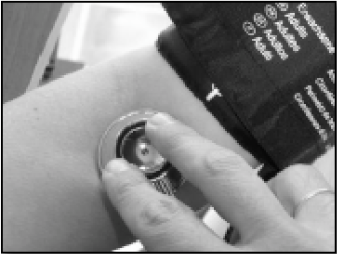

Metabolic Syndrome
HT.
To measure BP, the recommendations in the Manual of Hypertension of the Spanish Society of Family Medicine were followed. BP was determined after a resting period of 10 minutes in the supine position using an automatic and calibrated sphygmomanometer (OMRON M3, OMRON Healthcare Europe, Spain). As indicated for the anthropometrical measures, BP was measured three times with a 1-minute gap between each measurement and an average value was calculated.
Measuring blood pressure.
BP is measured in clinical practice using an indirect method. By an inflatable cuff pressure is exerted brachial artery until complete disappearance of the blood flow and therefore pulse. Subsequently, we proceed to the slow deflation of the same, then obtaining the PAS at the time arterial flow by auscultation or palpation detected again. The latter is equivalent to the first Korotkoff. The PAD is estimated when auscultation noises disappear completely, being equivalent to the fifth Korotkoff.
Terms.
To establish a diagnosis and an accurate measurement to be completed a number of conditions, as detailed below:
Environmental conditions:
- Quiet room, no noise or interruptions, with a temperature of 20-25 ° C.
- Hard plane where the arm support and seatback.
Previous rules.
- From half an hour before the measurement exercise should be avoided, coffee, snuff, alcohol and, in general, any food or drink.
- Previously urinate before taking tension.
- Sitting rest at least five minutes before taking.
Right position.
Sitting, leaning back, arm relaxed without clothes that oppresses and resting on a table or stand, with the palm up and slightly bent at the elbow heart level. Do not cross your legs.
Measuring devices.
- Sphygmomanometer. They are used: mercury sphygmomanometer and electronic devices for ease and convenience of use. They must be approved, validated and calibrated.
- Stethoscopes. Used for auscultation by manually taking sphygmomanometer.
Measuring technique.
They should be performed at least two measurements separated by at least 2 minutes, having a third repeat if a pressure difference between both greater than 5 mmHg is detected.
Locate the brachial artery palpation along the inner arm.
Place the sleeve So that the camera is placed above the arterial pulse; then adjust carefully. The lower edge, usually indicated by the signal that matches the brachial artery and must be 2-3 cm above the pit antecubiltal.
Place the phonendoscope with the membrane above the artery, without pressing too. Never enter the stethoscope below the sleeve.
Insufflate the sleeve rapidly to a pressure of 20 mmHg above the systolic, which is recognized by the disappearance of radial pulse. Deflate the cuff at 2 mmHg per second. Register Phase I (onset of noise) and phase V of Korotkoff (complete disappearance of the noise).

Return Test
Síndrome Metabólico.
HTA.
Para medir la Presión Arterial, se siguieron las recomendaciones del Manual de Hipertensión de la Sociedad Española de Medicina de Familia. Se determinó después de un período de descanso de 10 minutos en la posición supina utilizando un esfigmomanómetro automático y calibrado (OMRON M3, Omron Healthcare Europe, España). Como se ha indicado para las medidas antropométricas, BP se midió tres veces con una separación de 1 minuto entre cada medida y se calculó un valor medio.
¿ Cómo medir la presión arterial ?
La PA se mide en la práctica clínica mediante un método indirecto. Mediante un manguito hinchable se ejerce presión sobre la arteria humeral hasta conseguir la desaparición completa del flujo arterial y, por tanto, del pulso. Posteriormente, se procede al desinflado lento del mismo, obteniéndose entonces la PAS en el momento en que vuelve a detectarse el flujo arterial mediante auscultación o palpación. Esta última equivale al primer ruido de Korotkoff. La PAD se estima cuando los ruidos auscultatorios desaparecen por completo, siendo equivalente al quinto ruido de Korotkoff.
Condiciones.
Para establecer un diagnóstico y una medición precisa, deben completarse una serie de condiciones, que se detallan a continuación:
Condiciones del medio:
- Habitación tranquila, sin ruidos ni interrupciones, con temperatura de 20-25º C.
- Plano duro donde apoyar el brazo y asiento con respaldo.
Normas previas.
- Desde media a una hora antes de la medición se debe evitar ejercicio físico, café, tabaco, alcohol y, en general, cualquier comida o bebida.
- Orinar previamente antes de la toma de tensión.
- Reposar sentado cinco minutos como mínimo antes de la toma.
Posición adecuada.
Sentado, espalda apoyada, brazo relajado sin ropa que le oprima y apoyado sobre una mesa o soporte, con la palma de la mano hacia arriba y el codo ligeramente flexionado a la altura del corazón.No cruzar las piernas.
Aparatos de medida.
- Esfigmomanómetro. Se utilizan: esfigmomanómetro de mercurio y aparatos electrónicos por su facilidad y comodidad de uso. Deben estar homologados, validados y calibrados
- Fonendoscopio. Utilizado para auscultación mediante la toma manual con esfigmomanómetro.
Técnica de medición.
Se deben realizar como mínimo DOS MEDICIONES, separadas al menos 2 minutos, debiendo repetir una tercera si se detecta una diferencia de presión entre ambas mayor de 5 mmHg.
Localizar la arteria braquial por la palpación a lo largo de la cara interna del brazo.
Colocar el manguito de forma que la cámara se sitúe encima del latido arterial; después, ajustarlo cuidadosamente. El borde inferior, suele tener indicado la señal que coincida con la arteria braquial y debe de estar 2-3 cms por encima de la fosa antecubiltal.
Colocar el fonendo con la membrana encima de la arteria, sin presionar excesivamente. Nunca se debe introducir el fonendoscopio por debajo del manguito.
Insuflar el manguito rápidamente hasta alcanzar una presión de 20 mmHG por encima de la sistólica, lo que se reconoce por la desaparición del pulso radial. Desinflar el manguito a 2 mmHG por segundo. Registrar la fase I (aparición de los ruidos) y la fase V de Korotkoff (desaparición completa de los ruidos).
Volver al Test